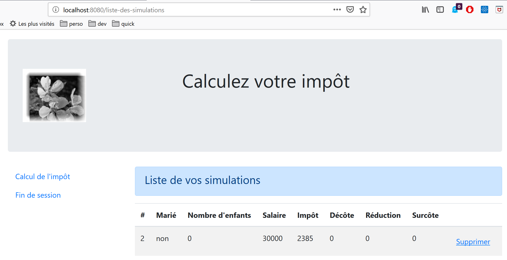
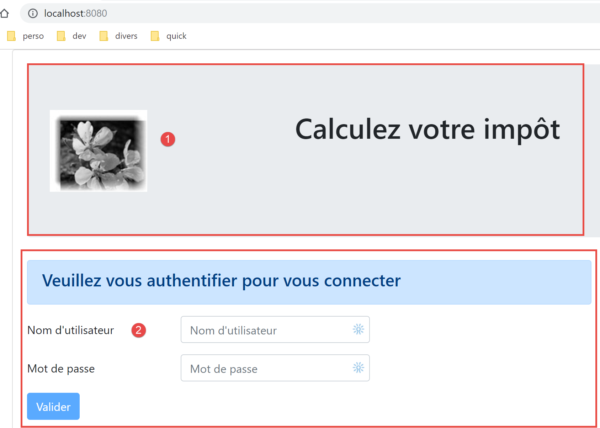
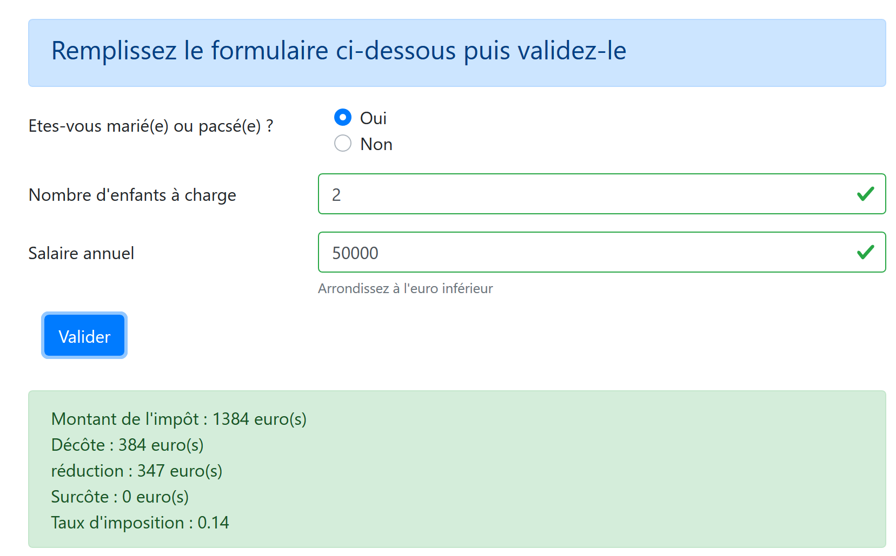
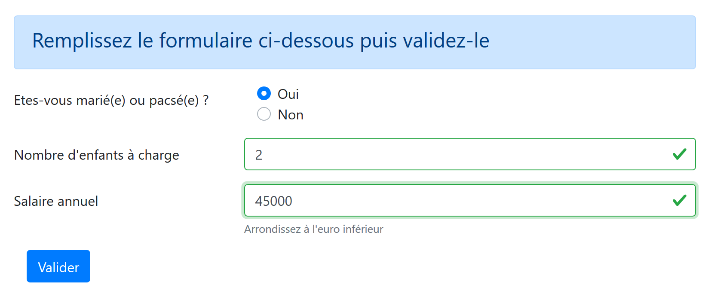
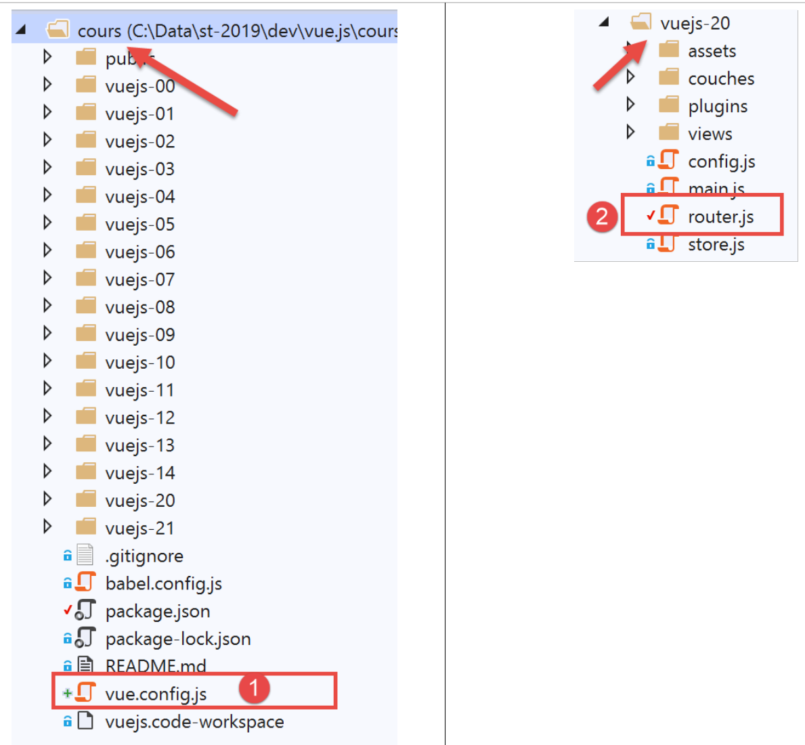
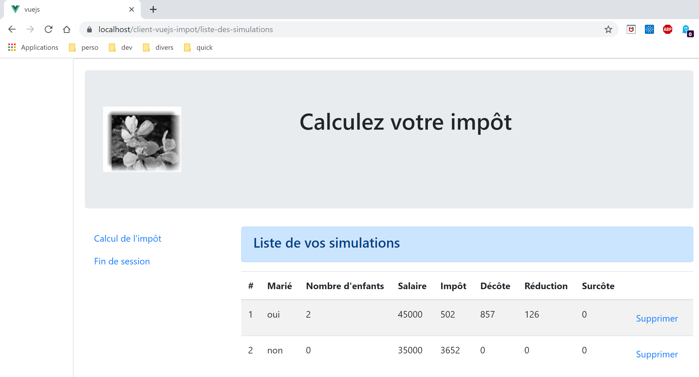

18. Client View.js of the tax calculation server
18.1. Architecture
We will implement a client/server application with the following architecture:

The tax calculation server will be version 14, developed in the document |https://tahe.developpez.com/tutoriels-cours/php7|
18.2. Application Views
The views of the [vuejs-10] application are those of version 13 from the document |https://tahe.developpez.com/tutorials-courses/php7| on the tax calculation server when used in HTML mode. However, in the current application, these views will be generated by the client Javascript and not by the server PHP.
The first screen is the authentication screen:

The second view is the tax calculation view:

The third view displays the list of simulations performed by the user:

The screen above shows that simulation #1 can be deleted. This results in the following view:

If we now delete the last simulation, we get the following new view:

18.3. Elements of project [vuejs-20]
The project tree for [vuejs-20] is as follows:

The project elements are as follows:
- [assets/logo.jpg]: the project logo;
- [couches]: the [métier] and [dao] layers of the application;
- [plugins]: the application’s plugins;
- [views]: the application views;
- [config.js]: configures the application;
- [router.js]: defines the application routing;
- [store.js]: the store for [Vuex];
- [main.js]: the application's main script;
18.3.1. Layers [métier] and [dao]
18.3.1.1. The [dao] layer
The [dao] layer is implemented by the [Dao] class in section |vuejs-10|
18.3.1.2. The [métier] layer
The [métier] layer is implemented by the [Métier] class in the document |https://tahe.developpez.com/tutoriels-cours/php7|. The following [setTaxAdminData] method has been added to it:
// manufacturer
constructor(taxAdmindata) {
// this.taxAdminData: tax administration data
this.taxAdminData = taxAdmindata;
}
// setter
setTaxAdminData(taxAdmindata) {
// this.taxAdminData: tax administration data
this.taxAdminData = taxAdmindata;
}
The [setTaxAdminData] method does the same thing as the constructor. Its presence allows for the following sequence:
- instantiate the [Métier] class with a [métier=new Métier()] statement when you want to instantiate the class but do not yet have the [taxAdminData] data;
- then populate its [taxAdminData] property later using a [métier.setTaxAdminData(taxAdmindata)] operation;
18.3.2. The configuration file [config]
The file [config.js] is as follows:
// using the [axios] library
const axios = require('axios');
// query timeout HTTP
axios.defaults.timeout = 2000;
// the URL base of the tax calculation server
// schema [https] causes problems for Firefox because the calculation server
// sends a self-signed certificate. ok with Chrome and Edge. Safari not tested.
axios.defaults.baseURL = 'https://localhost/php7/scripts-web/impots/version-14';
// we'll use cookies
axios.defaults.withCredentials = true;
// configuration export
export default {
axios: axios
}
This configuration is for the [axios] library that the [dao] layer uses to make its HTTP requests. Note on line 8 that the server operates on a secure port [https].
18.3.3. The plugins
The [pluginDao, pluginMétier, pluginConfig] plugins are designed to create three new properties for the [Vue] function/class:
- [$dao]: will have as its value an instance of the [Dao] class;
- [$métier]: will have as its value an instance of the [Métier] class;
- [$config]: will have as its value the object exported by the configuration file [config];
[pluginDao]
export default {
install(Vue, dao) {
// adds a [$dao] property to the Vue class
Object.defineProperty(Vue.prototype, '$dao', {
// when Vue.$dao is referenced, we return the 2nd parameter [dao]
get: () => dao,
})
}
}
[pluginMétier]
export default {
install(Vue, métier) {
// adds a [$métier] property to the Vue class
Object.defineProperty(Vue.prototype, '$métier', {
// when Vue.$métier is referenced, we return the 2nd parameter [métier]
get: () => métier,
})
}
}
[pluginConfig]
export default {
install(Vue, config) {
// adds a [$config] property to the view class
Object.defineProperty(Vue.prototype, '$config', {
// when Vue.$config is referenced, we return the 2nd parameter [config]
get: () => config,
})
}
}
18.3.4. The [Vuex] store
The [Vuex] store is implemented by the following [store] file:
// vuex plugin
import Vue from 'vue'
import Vuex from 'vuex'
Vue.use(Vuex);
// blind Vuex
const store = new Vuex.Store({
state: {
// simulation table
simulations: [],
// last simulation number
idSimulation: 0
},
mutations: {
// delete line n° index
deleteSimulation(state, index) {
// eslint-disable-next-line no-console
console.log("mutation deleteSimulation");
// delete line n° [index]
state.simulations.splice(index, 1);
// eslint-disable-next-line no-console
console.log("store simulations", state.simulations);
},
// add a simulation
addSimulation(state, simulation) {
// eslint-disable-next-line no-console
console.log("mutation addSimulation");
// simulation no
state.idSimulation++;
simulation.id = state.idSimulation;
// add the simulation to the simulation table
state.simulations.push(simulation);
},
// state cleaning
clear(state) {
state.simulations = [];
state.idSimulation = 1;
}
}
});
// export object [store]
export default store;
Comments
- lines 2-4: the [Vuex] plugin is integrated into the [Vue] framework;
- lines 8-13: we place the following elements in the [Vuex] store:
- [simulations]: the list of simulations performed by the user;
- [idSimulation]: the number of the last simulation performed by the user;
Note that the store will be shared among the views and that its content is reactive: when it is modified, the views that use it are automatically updated. In our application, only the [simulations] element needs to be reactive; the [idSimulation] element does not. We left this element in the store for convenience;
- lines 14–40: the mutations allowed on the [state] object from lines 8–13. Note that these always receive the [state] object from lines 8–13 as the first parameter;
- line 16: the [deleteSimulation] mutation allows you to delete a simulation with the ID [index];
- line 25: the [addSimulation] transaction allows you to add a new simulation to the simulation table;
- line 35: the mutation [clear] resets the object [state] from lines 8–13;
18.3.5. The routing file [router]
The routing file is as follows:
// imports
import Vue from 'vue'
import VueRouter from 'vue-router'
// the views
import Authentification from './views/Authentification'
import CalculImpot from './views/CalculImpot'
import ListeSimulations from './views/ListeSimulations'
// routing plugin
Vue.use(VueRouter)
// application routes
const routes = [
// authentication
{
path: '/', name: 'authentification', component: Authentification
},
// tAX CALCULATION
{
path: '/calcul-impot', name: 'calculImpot', component: CalculImpot
},
// list of simulations
{
path: '/liste-des-simulations', name: 'listeSimulations', component: ListeSimulations
},
// end of session
{
path: '/fin-session', name: 'finSession', component: Authentification
}
]
// the router
const router = new VueRouter({
// the roads
routes,
// how routes are displayed in the browser
mode: 'history',
})
// router export
export default router
Comments
- line 16: when the application starts, the [Authentification] view is displayed because its URL is the root [/];
- line 20: the [CalculImpot] view is displayed when the URL [/calcul-impot] is requested;
- line 24: the view [ListeSimulations] is displayed when URL or [/liste-des-simualtions] is requested;
- line 28: the view [Authentification] is displayed when URL [/fin-session] is requested;
- lines 33–38: a [router] object is created with these routes (line 35) and the [history] mode (line 37) for managing URL;
- line 41: this router is exported;
18.3.6. The main script [main.js]
The [main.js] script is as follows:
// imports
import Vue from 'vue'
// main view
import Main from './views/Main.vue'
// plugin [bootstrap-vue]
import BootstrapVue from 'bootstrap-vue'
Vue.use(BootstrapVue);
// CSS bootstrap
import 'bootstrap/dist/css/bootstrap.css'
import 'bootstrap-vue/dist/bootstrap-vue.css'
// router
import router from './router'
// plugin [config]
import config from './config';
import pluginConfig from './plugins/pluginConfig'
Vue.use(pluginConfig, config)
// instantiation layer [dao]
import Dao from './couches/Dao';
const dao = new Dao(config.axios);
// plugin [dao]
import pluginDao from './plugins/pluginDao'
Vue.use(pluginDao, dao)
// instantiation layer [métier]
import Métier from './couches/Métier';
const métier = new Métier();
// plugin [métier]
import pluginMétier from './plugins/pluginMétier'
Vue.use(pluginMétier, métier)
// blind Vuex
import store from './store'
// start-up of UI
new Vue({
el: '#app',
// the router
router: router,
// the Vuex awning
store: store,
// the main view
render: h => h(Main),
})
Note the following points:
- lines 18–21: the object exported by the script [./config] will be available in the [Vue.$config] attribute and thus accessible to all views in the application. This was unnecessary here because the [config] object is used only by the [main] script (line 25). However, it is common for the configuration to be required by multiple views. We therefore wanted to maintain the principle of making it available in a view attribute;
- lines 24–25: instantiation of the [dao] layer. The [Dao] class is imported on line 24 and then instantiated on line 25. Its constructor accepts the [axios] object, a configuration property, as its sole parameter;
- lines 27–29: the [dao] layer is made available in the [$dao] attribute of all views;
- lines 31–37: the same sequence is repeated for the [métier] layer. The constructor of the [Métier] class takes [taxAdminData] as a parameter, which represents the tax administration data. We do not yet have this data. The [métier] object in line 33 will therefore need to be completed at a later time;
- line 40: the [Vuex] store is imported;
- Lines 43–51: We instantiate the main view [Main] (lines 5 and 50), passing it two parameters:
- line 46: the router [router] defined on line 16;
- line 48: the store [Vuex] [store] defined on line 40;
- in both cases, the property name is on the left and its value on the right. The names of the [router, store] properties are set by the [vue-router] and [vuex] frameworks. The associated values can be anything;
18.4. Application Views
18.4.1. The main view [Main]
The code for the main view [Main] is as follows:
<!-- définition HTML de la vue -->
<template>
<div class="container">
<b-card>
<!-- jumbotron -->
<b-jumbotron>
<b-row>
<b-col cols="4">
<img src="../assets/logo.jpg" alt="Cerisier en fleurs" />
</b-col>
<b-col cols="8">
<h1>Calculez votre impôt</h1>
</b-col>
</b-row>
</b-jumbotron>
<!-- erreur requête HTTP -->
<b-alert
show
variant="danger"
v-if="showError"
>L'erreur suivante s'est produite : {{error.message}}</b-alert>
<!-- vue courante -->
<router-view v-if="showView" @loading="mShowLoading" @error="mShowError" />
<!-- loading -->
<b-alert show v-if="showLoading" variant="light">
<strong>Requête au serveur de calcul d'impôt en cours...</strong>
<div class="spinner-border ml-auto" role="status" aria-hidden="true"></div>
</b-alert>
</b-card>
</div>
</template>
<script>
export default {
// name
name: "app",
// inner state
data() {
return {
// controls waiting alert
showLoading: false,
// controls error alert
showError: false,
// controls the display of the current routing view
showView: true,
// an error message
error: ""
};
},
// event managers
methods: {
// asynchronous request error
mShowError(error) {
// eslint-disable-next-line
console.log("Main evt error");
// error msg is displayed
this.error = error;
this.showError = true;
// hide the routed view
this.showView = false;
// we hide the waiting message
this.showLoading = false;
},
// whether or not to display a waiting icon
mShowLoading(value) {
// eslint-disable-next-line
console.log("Main evt showLoading");
// whether or not to display the waiting alert
this.showLoading = value;
}
}
};
</script>
Comments
- The [Main] view ensures the layout of the routed and displayed view Line 23:

- Lines 5–15 display area 1;
- line 23 displays the routed view [2];
- Lines 16–19: an alert displayed only in the event of a communication error with the tax calculation server;
- lines 25–28: a waiting message displayed for each HTTP request made to the server;
- all views will be displayed with this layout since each routed view is displayed by lines 20–24. The [Main] view is used to factor out what can be shared by the different views;
- Line 23: Each routed view can trigger three events:
- [loading]: a HTTP request has been launched. The message indicating that a response is pending must be displayed;
- [error]: The request HTTP ended with an error. Display the error message and hide the routed view;
- lines 38–49: the view’s state:
- line 41: [showLoading] controls the display of the message waiting for the completion of a HTTP request (line 25);
- line 43: [showError] controls the display of the error message for a HTTP request (lines 17–21);
- line 45: [showView] controls the display of the routed view (line 23);
- lines 53–63: the [mShowError] method handles the [error] event emitted by the routed view (line 23);
- lines 65–70: the [mShowLoading] method handles the [loading] event emitted by the routed view (line 23);
- line 23: pay attention to events [error] and [loading]. They are intercepted only if the routed view is displayed ([showView=true]). This is why the routed view is initially displayed (line 45). It is hidden only in the event of an error (line 60). To avoid this problem, we could have used the directive [v-show] instead of [v-if]. The difference between these two directives is as follows:
- [v-if=’false’] hides the controlled block by removing it from the global HTML code. Events from the routed view can then no longer be intercepted;
- [v-show=’false’] hides the controlled block by modifying its CSS, but the block’s code remains present in the global HTML and can thus intercept events from the routed view;
18.4.2. The layout view [Layout]
The code for the [Layout] view is as follows:
<!-- definition HTML of the routed view layout -->
<template>
<!-- line -->
<div>
<b-row>
<!-- three-column zone on the left -->
<b-col cols="3" v-if="left">
<slot name="left" />
</b-col>
<!-- nine-column zone on the right -->
<b-col cols="9" v-if="right">
<slot name="right" />
</b-col>
</b-row>
</div>
</template>
<script>
export default {
// paramètres de la vue
props: {
// contrôle la colonne de gauche
left: {
type: Boolean
},
// contrôle la colonne de droite
right: {
type: Boolean
}
}
};
</script>
Comments
- The [Layout] view allows you to split the routed view into two areas:
- a 3-column Bootstrap area on the left (lines 7–9). This area will display the menu from navigation when one is available;
- a 9-column area on the right (lines 11–13). This area will display the information provided by the routed view;
18.4.3. The [Authentification] view
The authentication view is as follows:

This view is obtained from [Layout] by removing the left column to display only the right column.
Its code is as follows:
<!-- definition HTML of the view -->
<template>
<Layout :left="false" :right="true">
<template slot="right">
<!-- form HTML - post values with [authentifier-utilisateur] action -->
<b-form @submit.prevent="login">
<!-- title -->
<b-alert show variant="primary">
<h4>Bienvenue. Veuillez vous authentifier pour vous connecter</h4>
</b-alert>
<!-- 1st line -->
<b-form-group label="Nom d'utilisateur" label-for="user" label-cols="3">
<!-- user input field -->
<b-col cols="6">
<b-form-input type="text" id="user" placeholder="Nom d'utilisateur" v-model="user" />
</b-col>
</b-form-group>
<!-- 2nd line -->
<b-form-group label="Mot de passe" label-for="password" label-cols="3">
<!-- password input field -->
<b-col cols="6">
<b-input type="password" id="password" placeholder="Mot de passe" v-model="password" />
</b-col>
</b-form-group>
<!-- 3rd line -->
<b-alert
show
variant="danger"
v-if="showError"
class="mt-3"
>L'erreur suivante s'est produite : {{message}}</b-alert>
<!-- button type [submit] on a 3rd line -->
<b-row>
<b-col cols="2">
<b-button variant="primary" type="submit" :disabled="!valid">Valider</b-button>
</b-col>
</b-row>
</b-form>
</template>
</Layout>
</template>
<!-- view dynamics -->
<script>
import Layout from "./Layout";
export default {
// component status
data() {
return {
// user
user: "",
// password
password: "",
// controls the display of an error msg
showError: false,
// the error message
message: "",
// session started
sessionStarted: false
};
},
// components used
components: {
Layout
},
// calculated properties
computed: {
// valid entries
valid() {
return this.user && this.password && this.sessionStarted;
}
},
// event managers
methods: {
// ----------- authentication
async login() {
try {
// start waiting
this.$emit("loading", true);
// blocking server authentication
const response = await this.$dao.authentifierUtilisateur(
this.user,
this.password
);
// end of loading
this.$emit("loading", false);
// response analysis
if (response.état != 200) {
// error is displayed
this.message = response.réponse;
this.showError = true;
return;
}
// no error
this.showError = false;
// --------- we now request data from the tax authorities
// start waiting
this.$emit("loading", true);
// blocking request to the server
const response2 = await this.$dao.getAdminData();
// end of loading
this.$emit("loading", false);
// response analysis
if (response2.état != 1000) {
// error is displayed
this.message = response2.réponse;
this.showError = true;
return;
}
// no error
this.showError = false;
// the received data is stored in the [métier] layer
this.$métier.setTaxAdminData(response2.réponse);
// we move on to the tax calculation view
this.$router.push({ name: "calculImpot" });
} catch (error) {
// the error is traced back to the main component
this.$emit("error", error);
}
}
},
// life cycle: the component has just been created
created() {
// eslint-disable-next-line
console.log("authentification", "created");
// start a jSON session with the server
// start waiting
this.$emit("loading", true);
// on initialise la session avec le serveur - requête asynchrone
// we use the promise rendered by [dao] layer methods
this.$dao
// on initialise une session jSON
.initSession()
// we got the answer
.then(response => {
// end waiting
this.$emit("loading", false);
// response analysis
if (response.état != 700) {
// error is displayed
this.message = response.réponse;
this.showError = true;
return;
}
// the session has started
this.sessionStarted = true;
})
// in case of error
.catch(error => {
// trace the error to view [Main]
this.$emit("error", error);
});
}
};
</script>
Comments
- line 3: the [Authentification] view uses only the right column of [Layout] (lines 3 and 4);
- lines 6–38: the Bootstrap form that generates area 1 in the screenshot above;
- line 6: the [@submit] event occurs when the user clicks the [submit] button on line 35. The [prevent] modifier specifies that the page should not reload during the [submit] event. We could also have written:
- a <b-form> tag without handling the [submit] event;
- a <b-button> tag with the [@click=’login’] event and without the [type=’submit’] attribute;
That works as well. The advantage of the chosen solution is that submit is triggered not only by clicking the [Valider] button but also by a validation ([Entrée] key) in the input fields. It is therefore for the user’s convenience that the [<b-form @submit.prevent="login">] solution was chosen here;
- lines 33–37: an alert that appears when the server has rejected the credentials entered by the user:

- line 35: the [Valider] button is not always active. Its state depends on the calculated attribute [valid] in lines 71–73. The attribute [valid] is true if:
- there is something in the [user, password] fields of the form;
- the jSON session has started. Initially, this session has not started (line 59) and therefore the [Valider] button is inactive.
- lines 49–60: the view state;
- [user] represents the user’s input in the [user] field (lines 12–17) of the form. The [v-model] directive on line 15 establishes a two-way binding between the user input and the [user] attribute of the view;
- [password] represents the user's input in field [password] (lines 19–24) of the form. The [v-model] directive on line 22 establishes a two-way link between the user's input and the [password] attribute of the view;
- [showError] controls (line 29) the display of the alert for lines 26–31;
- [message] is the error message (line 31) to be displayed in the alert for lines 26–31;
- [sessionStarted] indicates whether the jSON session with the server has started or not. Initially, this attribute has the value [false] (line 59). The session jSON with the server is initialized in the [created] event of the view lifecycle, lines 126–156. If the server responds positively, then the attribute [sessionStarted] is set to [true] (line 149);
- lines 126–156: The [created] function is executed when the [Authentification] view has been created (though not necessarily displayed yet). In the background, a jSON session is then initialized with the server. We know this is the first action to perform with the tax calculation server. To do this, we use the application’s [dao] layer (line 134). All methods in this layer are asynchronous. Here, we use the Promise returned by the [$dao.initSession] method, which initializes the jSON session with the server.
- lines 138–150: the code executed when the server has returned its response without errors;
- Line 142: The [état] property of the response is checked. It must have the value [700] for a successful operation. Otherwise, an error has occurred, the cause of which is indicated in the [response.réponse] property (line 144). The view’s error message is then displayed (line 145);
- line 149: note that session jSON has started;
- lines 152–155: the code executed in the event of an error. This error is propagated to the parent view [Main], which
- will display the error;
- will hide the waiting message;
- hide the routed view, the [Autentification] view;
- lines 79–124: the method [login] handles the click on the button [Valider];
- line 79: the method has been prefixed with the keyword [async] to allow the use of the keyword [await], lines 84 and 103;
- lines 84–87: blocking call to the [$dao.authentifierUtilisateur(user, password)] method. We could have used a [Promise] promise as was done in the [created] function. We wanted to vary the styles. There is no risk of blocking the user because we have set a 2-second [timeout] on all HTTP requests. They won’t have to wait long. Furthermore, they can’t do anything until the server returns its response, because the [Valider] button remains inactive until then;
- line 91: the tax calculation server sends jSON responses, all of which have the structure [{‘action’:action, ‘état’:val, ‘réponse’:réponse}]. Authentication is successful if [état==200]. If not, an error message is displayed, lines 93–94;
- line 98: any error message from a previous operation is hidden;
- lines 99–116: we now request the tax authority data from the server that enables tax calculation. In [this.$métier], we have an instance of the class [Métier], which cannot do anything at this point because it does not have this data;
- line 103: the tax authority data is requested from the server via a blocking operation;
- lines 107–112: The server’s response is analyzed. It must have a status value of 1000; otherwise, an error has occurred. In the latter case, an error message is displayed (lines 109–110);
- lines 113–118: if the operation is successful, we:
- hide the error message (line 114);
- the tax administration data is transmitted to the [métier] layer (line 116);
- We display view [CalculImpot], line 118. Recall that [this.$router] refers to the application router. The method [push] is used to set the next routed view. Here, we specify it by its attribute [name]. We could also have specified it by its attribute [path]. This information is in the routing file:
// tAX CALCULATION
{
path: '/calcul-impot', name: 'calculImpot', component: CalculImpot
},
- lines 119–122: [catch] is triggered when one of the two HTTP requests fails (server not available, timeout exceeded, etc.). The error is then reported to the parent view [Main], which will display it, hide the loading message, and the view [Authentification];
18.4.4. The [CalculImpot] view
The [CalculImpot] view is as follows:

- [1]: a menu from navigation occupies the left column of the routed view;
- [2]: the tax calculation form occupies the right column of the routed view;
The code for the [CalculImpot] view is as follows:
<!-- definition HTML of the view -->
<template>
<div>
<Layout :left="true" :right="true">
<!-- tax calculation form on the right -->
<FormCalculImpot slot="right" @resultatObtenu="handleResultatObtenu" />
<!-- menu from navigation to left -->
<Menu slot="left" :options="options" />
</Layout>
<!-- display area for tax calculation results under the form -->
<b-row v-if="résultatObtenu" class="mt-3">
<!-- empty three-column zone -->
<b-col cols="3" />
<!-- nine-column zone -->
<b-col cols="9">
<b-alert show variant="success">
<span v-html="résultat"></span>
</b-alert>
</b-col>
</b-row>
</div>
</template>
<script>
// imports
import FormCalculImpot from "./FormCalculImpot";
import Menu from "./Menu";
import Layout from "./Layout";
export default {
// état interne
data() {
return {
// options du menu
options: [
{
text: "Liste des simulations",
path: "/liste-des-simulations"
},
{
text: "Fin de session",
path: "/fin-session"
}
],
// résultat du calcul de l'impôt
résultat: "",
résultatObtenu: false
};
},
// composants utilisés
components: {
Layout,
FormCalculImpot,
Menu
},
// méthodes de gestion des évts
methods: {
// résultat du calcul de l'impôt
handleResultatObtenu(résultat) {
// on construit le résultat en chaîne HTML
const impôt = "Montant de l'impôt : " + résultat.impôt + " euro(s)";
const décôte = "Décôte : " + résultat.décôte + " euro(s)";
const réduction = "Réduction : " + résultat.réduction + " euro(s)";
const surcôte = "Surcôte : " + résultat.surcôte + " euro(s)";
const taux = "Taux d'imposition : " + résultat.taux;
this.résultat =
impôt +
"<br/>" +
décôte +
"<br/>" +
réduction +
"<br/>" +
surcôte +
"<br/>" +
taux;
// affichage du résultat
this.résultatObtenu = true;
// ---- maj du store [Vuex]
// une simulation de +
this.$store.commit("addSimulation", résultat);
}
}
};
</script>
Comments
- line 4: the two columns of [Layout] are present here;
- line 6: the tax calculation form occupies the right column. It triggers the [resultatObtenu] event when the tax calculation result has been obtained. Note that event names and the names of the methods that handle them cannot contain accented characters;
- line 8: the navigation menu occupies the left column;
- lines 11–20: the tax calculation result is displayed below the form:

- line 11: the result is displayed only if the [résultatObtenu] attribute (line 47) is set to [true];
- lines 34–48: the view status:
- [options]: the list of menu options for navigation. This table is passed as a parameter to the [Menu] component, line 8;
- [résultat]: the result of the tax calculation. This result is a string HTML. This is why the directive [v-html] was used on line 17 to display it;
- [résultatObtenu]: the Boolean that controls the display of the result, line 11;
- lines 59–81: the method [handleResultatObtenu] displays the result of the tax calculation sent to it by the child view [FormCalculImpot], line 6. This result is an object with the properties [impot, décôte, réduction, surcôte, taux, marié, enfants, salaire];
- lines 61–75: the object [impot, décôte, réduction, surcôte, taux] is written to a text field HTML, which is displayed by line 17 of the template;
- line 77: this result is displayed;
- line 80: the [addSimulation] mutation of the Vuex store is called, which will add [résultat] to the simulations already present in the store;
18.4.5. The menu for navigation [Menu]
The menu for navigation appears in the left column of the routed views:

The code for the [Menu] view is as follows:
<!-- definition HTML of the view -->
<template>
<!-- bootstrap vertical menu -->
<b-nav vertical>
<!-- menu options -->
<b-nav-item
v-for="(option,index) of options"
:key="index"
:to="option.path"
exact
exact-active-class="active"
>{{option.text}}</b-nav-item>
</b-nav>
</template>
<script>
export default {
// paramètres de la vue
props: {
options: {
type: Array
}
}
};
</script>
Comments
- the menu options are provided by the parameter [options] (lines 7, 20–22);
- Each element in the [options] table has a [text] property (line 12) that is the link text and a [path] property (line 9) that is the path to the link’s target view;
18.4.6. The [FormCalculImpot] view
This view provides the tax calculation form:

Its code is as follows:
<!-- définition HTML de la vue -->
<template>
<!-- formulaire HTML -->
<b-form @submit.prevent="calculerImpot" class="mb-3">
<!-- message sur 12 colonnes sur fond bleu -->
<b-alert show variant="primary">
<h4>Remplissez le formulaire ci-dessous puis validez-le</h4>
</b-alert>
<!-- éléments du formulaire -->
<!-- première ligne -->
<b-form-group label="Etes-vous marié(e) ou pacsé(e) ?" label-cols="4">
<!-- boutons radio sur 5 colonnes-->
<b-col cols="5">
<b-form-radio v-model="marié" value="oui">Oui</b-form-radio>
<b-form-radio v-model="marié" value="non">Non</b-form-radio>
</b-col>
</b-form-group>
<!-- deuxième ligne -->
<b-form-group label="Nombre d'enfants à charge" label-cols="4" label-for="enfants">
<b-input
type="text"
id="enfants"
placeholder="Indiquez votre nombre d'enfants"
v-model="enfants"
:state="enfantsValide"
/>
<!-- message d'erreur éventuel -->
<b-form-invalid-feedback :state="enfantsValide">Vous devez saisir un nombre positif ou nul</b-form-invalid-feedback>
</b-form-group>
<!-- troisème ligne -->
<b-form-group
label="Salaire annuel"
label-cols="4"
label-for="salaire"
description="Arrondissez à l'euro inférieur"
>
<b-input
type="text"
id="salaire"
placeholder="Salaire annuel"
v-model="salaire"
:state="salaireValide"
/>
<!-- message d'erreur éventuel -->
<b-form-invalid-feedback :state="salaireValide">Vous devez saisir un nombre positif ou nul</b-form-invalid-feedback>
</b-form-group>
<!-- quatrième ligne, bouton [submit] sur 5 colonnes -->
<b-col cols="5">
<b-button type="submit" variant="primary" :disabled="formInvalide">Valider</b-button>
</b-col>
</b-form>
</template>
<!-- script -->
<script>
export default {
// inner state
data() {
return {
// married or not
marié: "non",
// number of children
enfants: "",
// annual salary
salaire: ""
};
},
// calculated internal state
computed: {
// form validation
formInvalide() {
return (
// disabled salary
!this.salaireValide ||
// or disabled children
!this.enfantsValide ||
// or tax data not obtained
!this.$métier.taxAdminData
);
},
// salary validation
salaireValide() {
// must be numeric >=0
return Boolean(this.salaire.match(/^\s*\d+\s*$/));
},
// child validation
enfantsValide() {
// must be numeric >=0
return Boolean(this.enfants.match(/^\s*\d+\s*$/));
}
},
// event manager
methods: {
calculerImpot() {
// tax is calculated using the [métier] layer
const résultat = this.$métier.calculerImpot(
this.marié,
this.enfants,
this.salaire
);
// eslint-disable-next-line
console.log("résultat=", résultat);
// complete the result
résultat.marié = this.marié;
résultat.enfants = this.enfants;
résultat.salaire = this.salaire;
// we issue the event [resultatObtenu]
this.$emit("resultatObtenu", résultat);
}
}
};
</script>
Comments
- lines 4–51: the Bootstrap form;
- lines 11-17: a group of radio buttons with their labels;
- lines 14–15: the <b-form-radio> tag displays a radio button:
- line 14: the directive [v-model] ensures that when the button is clicked, the attribute [marié] on line 61 will be set to the value [oui] (attribute [value="oui"]);
- line 15: The directive [v-model] ensures that when the button is clicked, the attribute [marié] in line 61 will be set to [non] (attribute [value="non"]);
- lines 19–29: the section for entering the number of children:
- row 24: the entry for the number of children is linked to attribute [enfants] in row 63;
- line 25: the validity of the entry is verified by the calculated attribute [enfantsValide] in lines 87–89;
- line 28: displays an error message if the entry is invalid;
- Lines 31–45: the annual salary entry section:
- line 35: displays a help message just below the input field;
- line 41: the salary entry is linked to attribute [salaire] in line 65;
- line 42: the validity of the entry is verified by the calculated attribute [salaireValide] in lines 82–85;
- line 45: ensures that an error message is displayed if the entry is invalid;
- lines 48–50: a button of type [submit]. When this button is clicked or when an entry is validated using the [Entrée] key, the [calculerImpot] method is executed (line 94);
- line 49: the active/inactive state of the button is controlled by the calculated attribute [formInvalide] in lines 71-80;
- lines 71–80: the form is valid if:
- the number of children is valid;
- the salary is valid;
- the application has obtained the tax administration data from the server that enables tax calculation. Note that this data is stored in the [$métier.taxAdminData] property. The view [FormCalculImpot] can be displayed before this data has been obtained because it is requested asynchronously at the same time the view is displayed. Here, we ensure that the user cannot click the [Valider] button until the data has been retrieved;
- lines 94–109: the tax calculation method:
- lines 96–100: the [métier] layer performs this calculation. This is a synchronous calculation. Once the [taxAdminData] data has been retrieved, the [Vue] client no longer needs to communicate with the server. Everything is done locally. We obtain a [résultat] object with the properties of [impôt, décôte, surcôte, réduction, taux];
- lines 104–106: the properties [marié, enfants, salaire] are added to the result;
- line 108: the result is passed to the parent view [CalculImpot] via the event [resultatObtenu]. This view is responsible for displaying the result;
18.4.7. The [ListeSimulations] view
The view [ListeSimulations] displays the list of simulations performed by the user:

The view code is as follows:
<!-- definition HTML of the view -->
<template>
<div>
<!-- layout -->
<Layout :left="true" :right="true">
<!-- simulations in right-hand column -->
<template slot="right">
<template v-if="simulations.length==0">
<!-- no simulations -->
<b-alert show variant="primary">
<h4>Votre liste de simulations est vide</h4>
</b-alert>
</template>
<template v-if="simulations.length!=0">
<!-- there are simulations -->
<b-alert show variant="primary">
<h4>Liste de vos simulations</h4>
</b-alert>
<!-- simulation table -->
<b-table striped hover responsive :items="simulations" :fields="fields">
<template v-slot:cell(action)="data">
<b-button variant="link" @click="supprimerSimulation(data.index)">Supprimer</b-button>
</template>
</b-table>
</template>
</template>
<!-- navigation menu in left-hand column -->
<Menu slot="left" :options="options" />
</Layout>
</div>
</template>
<script>
// imports
import Layout from "./Layout";
import Menu from "./Menu";
export default {
// components
components: {
Layout,
Menu
},
// inner state
data() {
return {
// navigation menu options
options: [
{
text: "Calcul de l'impôt",
path: "/calcul-impot"
},
{
text: "Fin de session",
path: "/fin-session"
}
],
// table parameters HTML
fields: [
{ label: "#", key: "id" },
{ label: "Marié", key: "marié" },
{ label: "Nombre d'enfants", key: "enfants" },
{ label: "Salaire", key: "salaire" },
{ label: "Impôt", key: "impôt" },
{ label: "Décôte", key: "décôte" },
{ label: "Réduction", key: "réduction" },
{ label: "Surcôte", key: "surcôte" },
{ label: "", key: "action" }
]
};
},
// calculated internal state
computed: {
// list of simulations taken from the Vuex blind
simulations() {
return this.$store.state.simulations;
}
},
// methods
methods: {
supprimerSimulation(index) {
// eslint-disable-next-line
console.log("supprimerSimulation", index);
// delete simulation n° [index]
this.$store.commit("deleteSimulation", index);
}
}
};
</script>
Comments
- line 5: the view occupies both columns of the [Layout] layout for routed views;
- lines 7–26: the simulations go in the right column;
- line 28: the navigation menu goes in the left column;
- lines 8, 14, 20, 75: the simulations come from the [Vuex] and [$this.store] data streams;
- lines 8–13: alert displayed when the list of simulations is empty;
- lines 14–25: the HTML table displayed when the list of simulations is not empty;
- lines 20–24: the table HTML is generated by a <b-table> tag;
- line 20: the simulation table is provided by the calculated attribute [simulations] from lines 74–76;
- line 20: the configuration of table HTML is determined by the calculated attribute [fields] from lines 58–69. Line 67: The key column [action] is the last column of table HTML;
- Lines 21–23: template for the last column of table HTML;
- row 22: a link button is placed here. When clicked, the method [supprimerSimulation(data.index)] is called, where [data] represents the current row (row 21). [data.index] represents the number of this row in the list of displayed rows;
- line 28: generation of the navigation menu. Its options are provided by the [options] attribute of lines 47–56;
- lines 80–85: the method that responds to a click on a [Supprimer] link on the HTML page;
- line 84: the [deleteSimulation] mutation of the [Vuex] store is called (see section |vuejs-15|);
18.5. Running the project

You must also start the [Laragon] server (see document |https://tahe.developpez.com/tutoriels-cours/php7|) so that the tax calculation server is online.
18.6. Deploying the application on a local server
Currently, our [Vue] client is deployed on a test server at URL [http://localhost:8080]. We will deploy it to the [Laragon] server at URL [http://localhost:80]. There are several steps to complete to achieve this.
Step 1
First, we will ensure that the client [Vue] is deployed to the test server at URL and [http://localhost:8080/client-vuejs-impot/].
We create a file named [vue.config.js] at the root of our current [VSCode] project:

The [vue.config.js] [1] file will have the following content:
// vue.config.js
module.exports = {
// the client's URL service [vuejs] of the tax calculation server
publicPath: '/client-vuejs-impot/'
}
We also need to modify the routing file [router.js] [2]:
// imports
import Vue from 'vue'
import VueRouter from 'vue-router'
// the views
import Authentification from './views/Authentification'
import CalculImpot from './views/CalculImpot'
import ListeSimulations from './views/ListeSimulations'
// routing plugin
Vue.use(VueRouter)
// application routes
const routes = [
// authentication
{
path: '/', name: 'authentification', component: Authentification
},
// tAX CALCULATION
{
path: '/calcul-impot', name: 'calculImpot', component: CalculImpot
},
// list of simulations
{
path: '/liste-des-simulations', name: 'listeSimulations', component: ListeSimulations
},
// end of session
{
path: '/fin-session', name: 'finSession', component: Authentification
}
]
// the router
const router = new VueRouter({
// the roads
routes,
// how routes are displayed in the browser
mode: 'history',
// the application's basic URL
base: '/client-vuejs-impot/'
})
// router export
export default router
- line 39: we tell the router that the paths of the routes defined on lines 13–30 are relative to the path defined on line 39. For example, the path on line 20, [/calcul-impot], will become [/client-vuejs-impot/calcul-impot];
We can then test the [vuejs-20] project again to verify the change in the application paths:

Step 2
We now build the production version version of the project [vuejs-20]:

- In [1-2], we configure the task [build] [2] in the file [package.json] [1];
- In [3-5], we execute this task. It is this task that will build the production version for the [vuejs-20] project;
The execution of task [build] takes place in a terminal of [VSCode]:


- In [3-6], warnings indicate that the generated code is too large and should be split into [8]. This involves optimizing the code architecture, which we will not address here;
- In [7], we are told that the folder [dist] contains the generated production version:

- In [3], the file [index.html] is the file that will be used when URL or [https://localhost:80/client-vue-js-impot/] is requested;
Here we have a static site that can be deployed on any server. We will deploy it on the local Laragon server (see document |https://tahe.developpez.com/tutoriels-cours/php7|). The folder [dist] [2] is copied into the folder [<laragon>/www] [4], where <laragon> is the Laragon server installation folder. We rename this folder [client-vuejs-impot] [5] since we have configured the production version to run on URL [/client-vuejs-impot/].
Step 3
We add the following file to the newly created [client-vuejs-impot] folder:
<IfModule mod_rewrite.c>
RewriteEngine On
RewriteBase /client-vuejs-impot/
RewriteRule ^index\.html$ - [L]
RewriteCond %{REQUEST_FILENAME} !-f
RewriteCond %{REQUEST_FILENAME} !-d
RewriteRule . /client-vuejs-impot/index.html [L]
</IfModule>

This file is an Apache web server configuration file. If we do not include it and request URL [https://localhost/client-vuejs-impot/calcul-impot] directly, without first going through URL [https://localhost/client-vuejs-impot/], we get a 404 error. With this file, we successfully get the [CalculImpot] view.
Once this is done, we start the Laragon server if we haven’t already and request the URL [https://localhost/client-vuejs-impot/]:

Readers are invited to test the production version of our application.
We can modify the tax calculation server in one respect: the headers it systematically sends to its clients. This was necessary for the client’s version running from the [localhost:8080] domain. Now that both the client and server are running in the [localhost:80] domain, the CORS headers are no longer needed.
We modify the [config.json] file in the server’s version 14:

- in [4], we specify that CORS requests are now denied;
Let’s save this change and resubmit the URL [https://localhost/client-vuejs-impot/]. It should continue to work.
18.7. Managing manual URL requests
Instead of using the links in the navigation menu, the user may want to type the application’s URL URLs manually into the browser’s address bar. Let’s try, for example, the URL [https://client-vuejs-impot/calcul-impot] without going through the authentication step. A hacker would surely try this. We get the following view:

We do indeed get the tax calculation view. Now let’s try filling in the input fields and submitting them:

We then find that the [1] [Valider] button remains disabled even when the entries are correct. Let's look at the code for the [FormCalculImpot] view:
<b-col cols="5">
<b-button type="submit" variant="primary" :disabled="formInvalide">Valider</b-button>
</b-col>
In line 2, we see that its active/inactive state depends on the property [formInvalide]. This is the following computed property:
formInvalide() {
return (
// disabled salary
!this.salaireValide ||
// or disabled children
!this.enfantsValide ||
// or tax data not obtained
!this.$métier.taxAdminData
);
},
Line 8 shows that for the form to be valid, tax data must have been obtained. However, this data is obtained during the validation of view [Authentification], which the user “skipped.” Therefore, they will not be able to submit the form. If they had been able to do so, they would have received an error message from the server indicating that they were not authenticated. Validations must always be performed on the server side. Validations on the browser side can always be bypassed. All it takes is a client of type [Postman] that will send raw requests to the server.
Now let’s request the URL [https://localhost/client-vuejs-impot/liste-des-simulations]. We get the following view:

Now URL [https://localhost/client-vuejs-impot/fin-session]. We get the following view:

Now a view that doesn’t exist: [https://localhost/client-vuejs-impot/abcd]:

Our application handles manually typed URL URLs quite well. When these are called, the application router is aware of it. It is therefore possible to intervene before the view is finally displayed. We will examine this point in the [vuejs-21] project.
Another point to consider is the following. Let’s imagine that the user has run a few simulations according to the rules:

Now let’s refresh the page by pressing F5:

We did something that is not recommended: typing URL manually (pressing F5 amounts to this). As a result, we lost our simulations.
The following project, [vuejs-21], aims to introduce two improvements:
- validate the URL entered by the user;
- maintain the application’s state even if the user enters a URL. Above, we can see that we have lost the list of simulations;